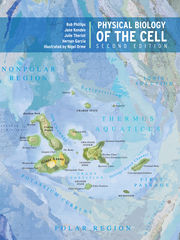

Texts
Physical Biology of the Cell
by Phillips, Kondev, Theriot, and GarciaISBN: 0815341636

Schedule
| Date | Topic | Reading |
|---|---|---|
| Monday, Jan. 11 | Welcome to the revolution! We will discuss the importance of physical reasoning and numeracy in approaching biological problems and perform some back-of-the-envelope estimates of cells, the cost of a gene, and the central dogma. | Lecture notes, Schmidt et al., 2016 |
| Tuesday, Jan. 12 | We will continue our adventure into biology by the numbers followed by an introduction to biological specificity. We will work through the concept of kinetic proofreading, ligand-receptor binding, and the tradeoff between speed and accuracy. | TBD |
| Wednesday, Jan. 13 | We will wrap up our discussion about biological specificity by examining allosteric interactions and Maxwell's demon. We will also intnroduce probability as the language of quantitative biology by playing with biological coin flips. | TBD |
| Thursday, Jan. 14 | How do cells decide where to go? We will use our knowledge of probability and specificity to examine chemotaxis, the Monod-Wyman-Changeaux model, adaptation, and the relationship between cytoskeletal remodeling and cell signaling. | TBD |
| Friday, Jan. 15 | How do cells decide what to be? An introduction to quantitative descriptions of transcriptional regulation using thermodynamic models. | TBD |
| Monday, Jan. 18 | We will continue our study of transcriptional regulation. | TBD |
| Tuesday, Jan. 19 | An introduction to cellular and genome organization. | TBD |
| Wednesday, Jan. 20 | What shapes a cell? We will discuse the organization and mechanics of membranes and discuss the organization of cell shape. | TBD |
| Thursday, Jan. 21 | The organization of tissues and course wrap-up. | TBD |